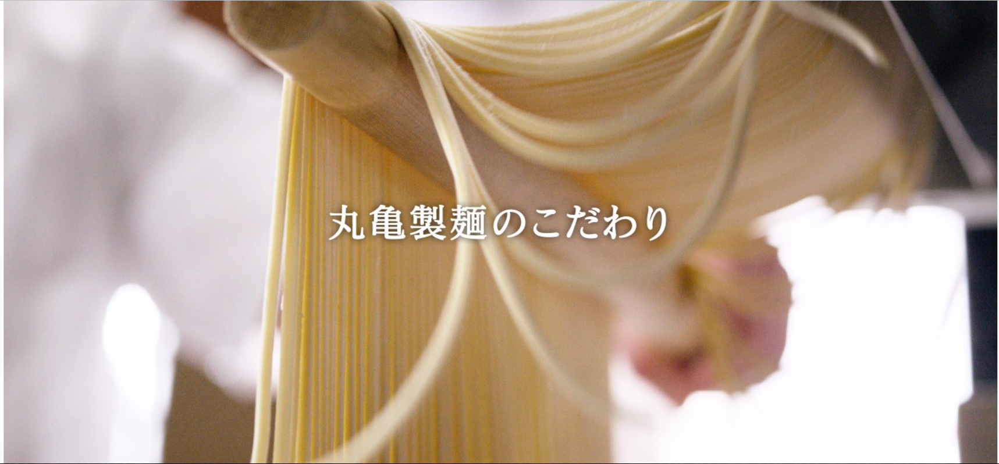

ここのうどんは生きている
丸亀製麵
メニュー 店舗検索 丸亀製麺のこだわり
公式アプリ

重要なお知らせ
店舗営業状況に関するお知らせ
▼
新型コロナウィルス感染拡大防止に伴うお知らせ
▼
Go To Eat お食事券について
▼
■新型コロナウイルス感染拡大防止に伴う休業または営業時間の変更について
丸亀製麺の各店舗では、新型コロナウイルス感染症拡大防止の為、一部店舗において休業または営業時間を短縮させていただきます。
※詳細は、各店舗のページをご確認ください。なお、やむを得ず急な営業時間の変更の可能性がございます事、あらかじめご了承ください。
お客様には大変ご不便をお掛けしますが、ご理解とご協力を賜りますよう、心よりお願い申し上げます。
丸亀製麺の各店舗では、新型コロナウイルス感染症拡大防止の為、一部店舗において休業または営業時間を短縮させていただきます。
※詳細は、各店舗のページをご確認ください。なお、やむを得ず急な営業時間の変更の可能性がございます事、あらかじめご了承ください。
お客様には大変ご不便をお掛けしますが、ご理解とご協力を賜りますよう、心よりお願い申し上げます。
丸亀製麵のメニュー ▶一覧を見る 産地情報▶ アレルギー情報▶

| うどん | 天ぷら |
|---|---|
| 丸亀製麺は全店に製めん機を置いて、打ち立て、茹でたての味を実現。 | 出汁との相性にこだわった天ぷらは、うどんのおいしさを引き立てる最高の相棒 |

| 丼・いなり・おむすび | トッピング・その他 |
|---|---|
| 国産米をふっくら炊きあげました。のりの風味が香るおむすびは、4種類の味をお楽しみいただけます。 | お好みの味にカスタマイズ。自由なアレンジで、自分だけの味を見つけてください。 |


| ▶はじめての方へ | ▶丸亀製麺公式アプリ | ▶アルバイト募集 |
|---|---|---|
| はじめてでも安心！セルフスタイルの注文 方法をご紹介します。 |
おトクなクーポンやスタンプがご利用いただけます。 | 丸亀製麺ではアルバイトを募集しています。 |
店舗検索 全国に広がる丸亀製麺の店舗を検索いただけます。 現在地から探す ▼ 都道府県から探す ▼ ▶海外の店舗を探す |

|
|
おしらせ
▶一覧を見る 2022年05月09日 ▶来店スタンプ付与数エラー発生のお知らせ 2022年4月25日 ▶全国の丸亀製麺にて「丸亀製麺dポイント 全額分ポイントバックキャンペーン」を実施 2022年04月21日 ▶待望の復活『トマたまカレーうどん』と新 作『とろける4種のチーズトマたまカレーう どん』を4/26（火）から全国の丸亀製麵にて販売開始 |
新店舗情報
▶一覧を見る 2022年03月29日 ▶【宮城県】丸亀製麺古川中島オープン 2022年03月25日 ▶【東京都】丸亀製麵綾瀬駅東口オープン 2022年02月25日 ▶【岩手県】丸亀製麵盛岡津志田オープン |

採用情報 社会貢献活動 お問い合わせ
TORIDOLL
2021 TORIDOLL Holdings Corporation Rights Reserved.